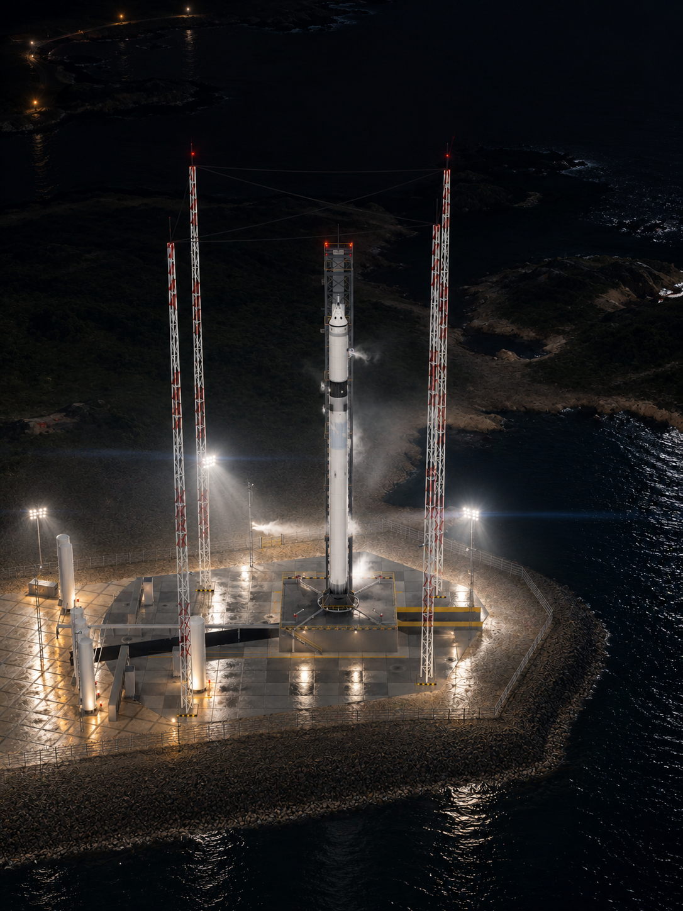
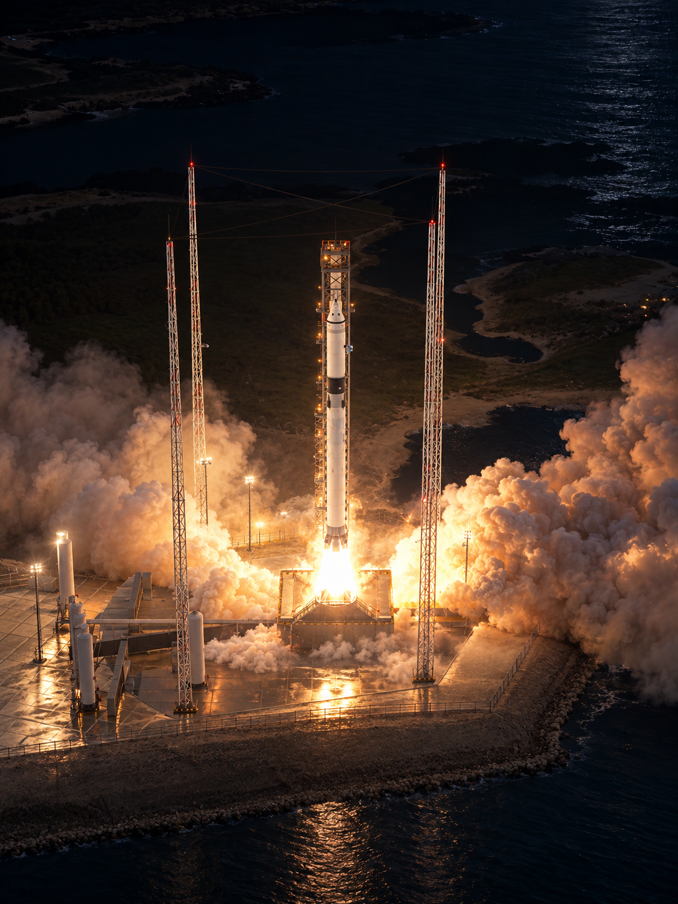
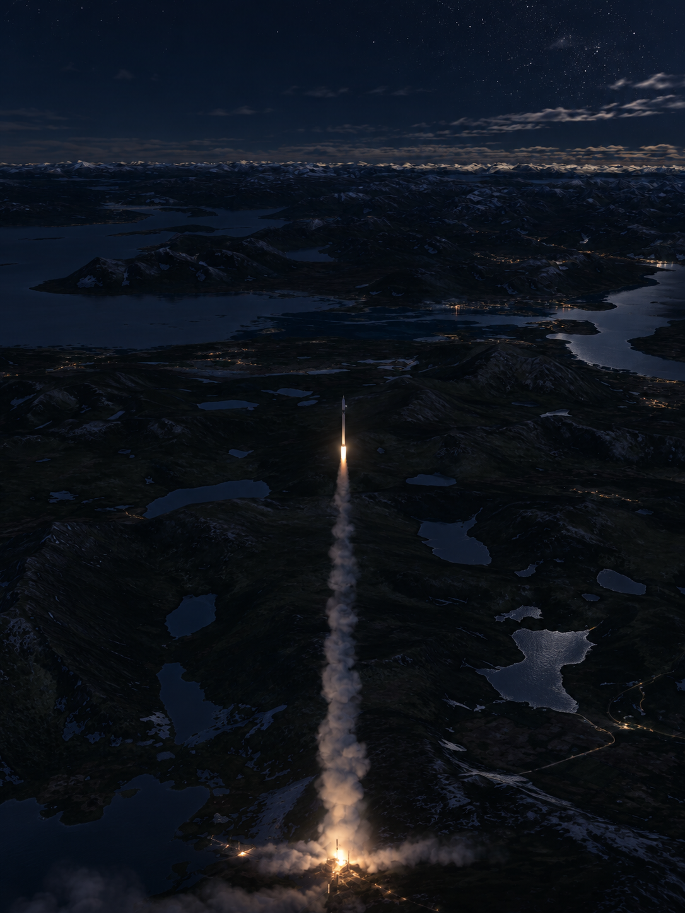
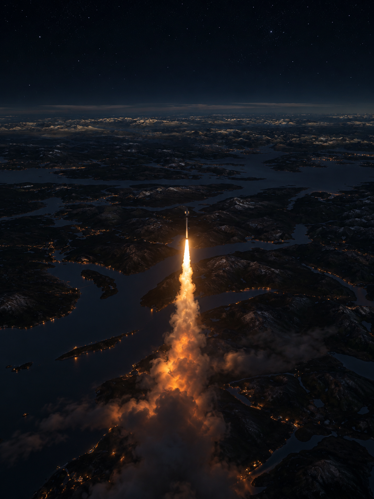
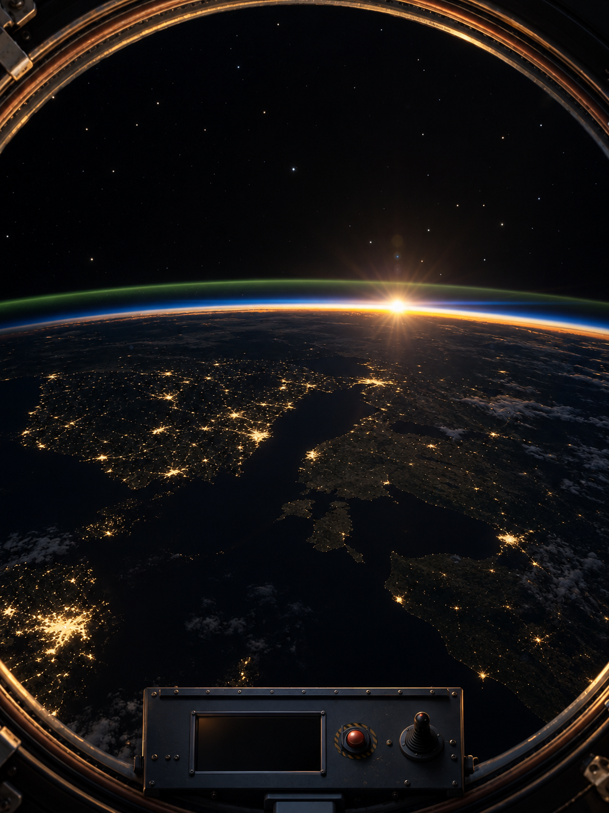
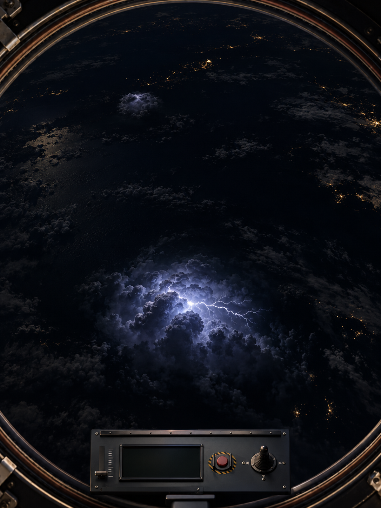
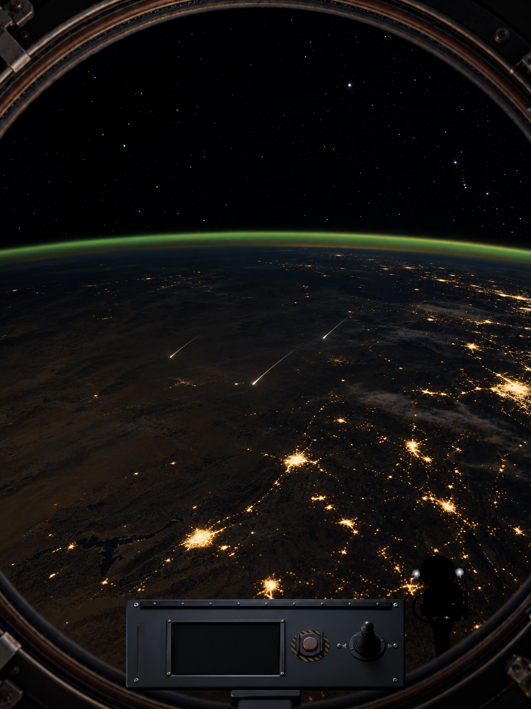
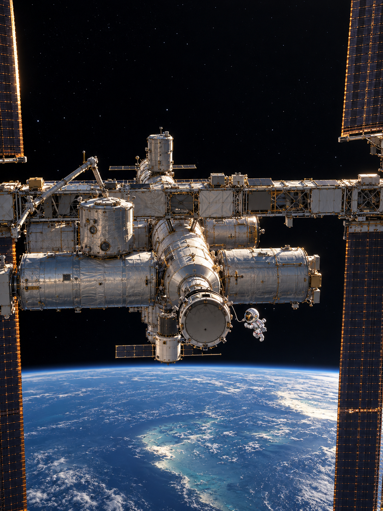
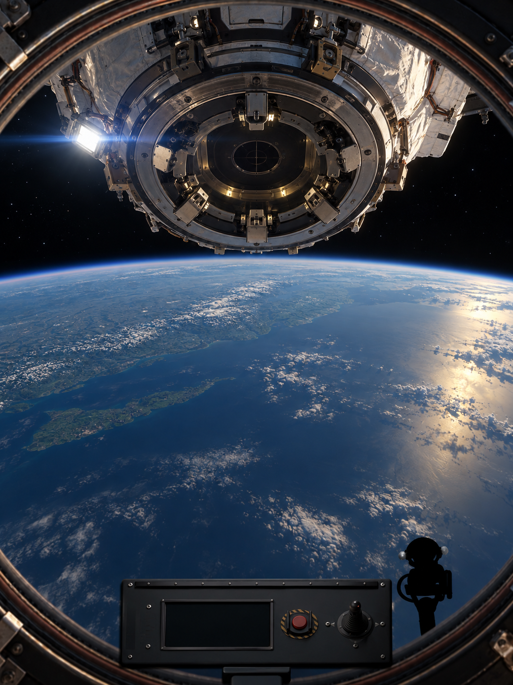

r1 — arvioehdokas

Yö, märkä betoni, keinovalo ja höyry onnistuvat. Valonheittimien asemat, rantamaaston yksityiskohdat ja kaapelit ovat keksittyjä.
1086×1448 native; ei pelijulkaisu eikä omistajahyväksyntä. QA-raportti

Yö, märkä betoni, keinovalo ja höyry onnistuvat. Valonheittimien asemat, rantamaaston yksityiskohdat ja kaapelit ovat keksittyjä.

Raketti näyttää jo irronneen alustasta: T+1/alustalla-ehto ei täyty. Savun sisäinen valo ja valkohehkuinen ydin ovat hyödyllisiä erillisinä valotavoitteina.

Laaja takaa-ajokamera ja pieni raketti säilyvät. Maiseman yleisvalo, tähtien yhtäaikainen näkyvyys ja pitkän savuvanan valaistus ovat elokuvamaisia, eivät varmennettua fysiikkaa.

Pitkä liekki ja savuvana ovat pääosassa; raketti on hieman suurempi/ylempänä kuin lähteessä. Etäisen savun laaja oranssi hehku on valotusvaraus.

Yksi Cupolan ikkuna, fyysinen kehys ja konsoli säilyvät; pieni aurinko ja ohut horisontti. Tähdet ja kaupunkivalot jäävät liian kirkkaiksi, vaakajuova on toivottua heikompi. Ei sellaisenaan valotusmalliksi.

Alasolu sisältää pyydetyn ohuen haarautuvan vaakasalamakanavan. Myös ylävasen solu on paikallisesti sinivalkoinen ja valaistunut: vain yksi välähdys koko näkymässä EI toteudu luotettavasti.

Kolme ohutta rinnakkaista vinoa meteoria sijoittuu kuvassa Maan kaaren alapuolelle; päät ja ohenevat vanat näkyvät. Korkeutta tai radianttia ei yhdestä kuvasta todenneta. Valotus ja maantiede ovat keksittyjä.

Ulkoinen lähestymiskamera ja päämoduulien sommittelu säilyvät. Aurinkopaneelien suunnat ja yksityiskohtainen ISS-topologia muuttuvat; ei rakennemallinnuksen lähteeksi. Kirkas päivä-Maa ja näkyvät tähdet ovat valotusvaraus.

Portti lisättiin tekstiohjeen mukaan, vaikka lähdereferenssissä ei näy porttia. Cupolan kehys, konsoli ja Maa säilyvät. Portti, salvat, työkohdevalot ja niiden suhde Cupolaan ovat keksittyjä: eivät nykyisen peligeometrian tai oikean telakoinnin todiste.